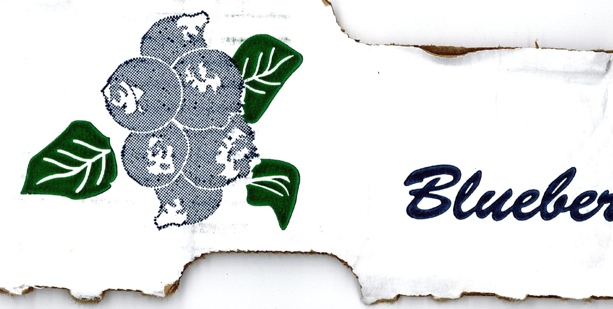
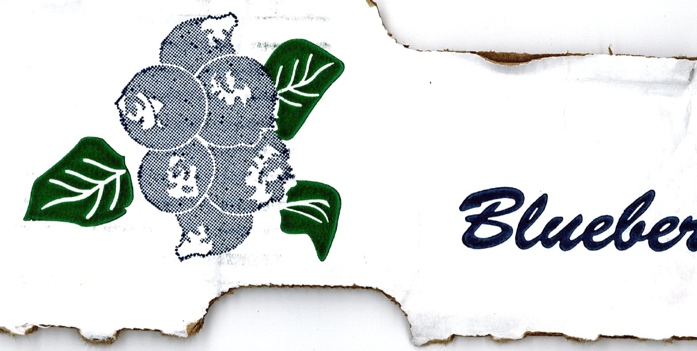

i work in a cafe and very often carry boxes of produce in to be stocked, fresh fruits and veggies. these boxes have beautiful images printed on them, some bunches of bananas, drops of gold sweet potatoes, tomatoes, and images of sprawling fields, usually the same suppliers and the same images. but sometimes, the blueberries come from different farms, and the boxes have unique prints on them and i am always struck by how playful they are, how different the representations of the berries will be, how some are halftone and others are more of a solid stamp. so i started collecting them, i have a few, i hope to have many, i hope to continue to grow this and look back and feel the whimsy of 8am at my cafe, scooping yogurt and laughing with my sweet coworkers :) i hope you enjoy.


 
